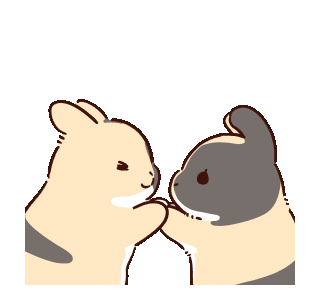

This page contains the personal reflections of each group member regarding the usability evaluation process, insights gained, and lessons learned throughout the project.
"Throughout the development of the PawTrack: Pet Care & Vet Booking App, I contributed to both the prototype and documentation process by refining interface components such as the vaccination records, appointment booking, and add new pet features. I also helped organize screenshots, evaluation results, and supporting documents for the web reporting site. Conducting heuristic evaluation, usability testing, and analyzing the SUS questionnaires gave me valuable experience in understanding how users interact with the system and how usability and user-centered design play an important role in improving overall user experience.
One of the challenges I encountered was balancing the technical and documentation aspects of the project within a limited timeframe. Some respondents suggested advanced features that were beyond the current scope and capabilities of the prototype, while minor interface concerns such as icon visibility and cursor appearance were also observed during testing. To address these challenges, I focused on prioritizing the essential functionalities and usability goals of the system while organizing the project files and documentation more efficiently. Overall, this project improved my skills in prototyping, usability evaluation, documentation, communication, and critical thinking, and it helped me become more aware of the importance of developing systems that are not only functional but also user-friendly and accessible."
"For this project, I helped out with designing the prototype screens in Figma, like the Reminders feature, the Profile page, and some of the popups like logout and delete account confirmation. I also tried my best to keep the design looking consistent all throughout, with the colors and layout. Doing the heuristic evaluation and usability testing was honestly a different experience because seeing other people use the prototype made me realize that what made sense to us didn't always make sense to them. Some of the challenges I faced were keeping the design consistent across all the screens, but I figured it out as I did the task assigned to me.
This project honestly taught me a lot of things I didn't fully understand just from lectures. I learned that designing isn't just about making things look nice and attractive, it also has to be easy to use. The usability testing part especially made me more aware of how users think, which is something I didn't really consider much before. Looking back, I'm proud that the prototype actually came out looking when put together, and I think the skills and experience I got from this will be useful in future projects and even in actual work someday."
"Throughout the development of our prototype project, I contributed by helping design and improve the user interface of the system, especially the login, user profile, and pet profile screens in Figma. I also participated in conducting surveys, demonstrating the prototype to respondents, and guiding users during usability testing. Through heuristic evaluation and SUS questionnaires, I learned how important user feedback is in improving the overall usability and functionality of the system. The experience helped me understand that a good design is not only visually appealing but also easy to use, accessible, and user-centered.
During the project, I encountered challenges such as organizing tasks, maintaining consistency in the design, and adjusting the prototype based on user feedback. There were also times when it was difficult to decide which features and layouts would provide the best user experience. To overcome these challenges, I collaborated closely with my group members, researched UI/UX design principles, and continuously revised the prototype to make it more user-friendly. Overall, this project improved my technical, communication, and problem-solving skills, and it gave me a better understanding of how real-world system development and user-centered design work together in creating effective applications."
"During the development of PawTrack, I contributed to the creation of the prototype and the development of the web reporting site used to present the project findings.Through this process, I gained experience in applying user-centered design principles and understanding how usability directly affects the overall user experience of an application.
Throughout the project, I encountered challenges in organizing documentation, analyzing evaluation results, and ensuring that the website remained visually clean and functional. To overcome these difficulties, I collaborated with my group members, improved time management, and continuously refined both the interface and content presentation. This experience strengthened my technical, analytical, and communication skills while teaching me the importance of usability evaluation in software development. Overall, I am proud of contributing to a project that combines both technical implementation and user experience design, and I believe the lessons learned will help me in future IT and software development projects."